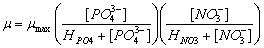
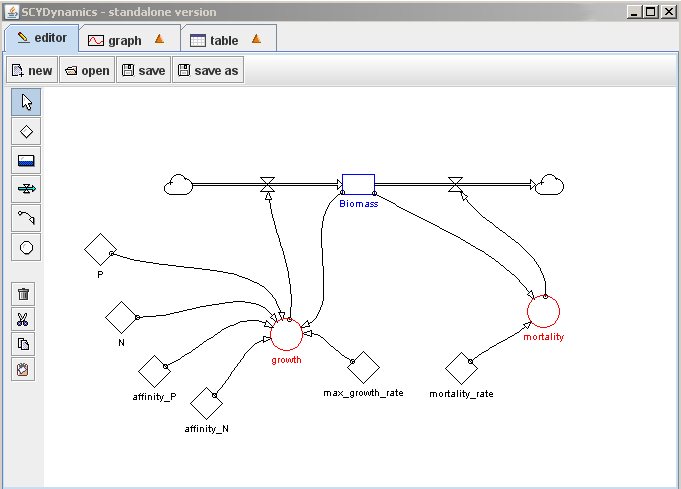

Το απλό μοντέλο έχει ένα απόθεμα: τη βιομάζα (ανάπτυξη φυτοπλαγκτού). Η αύξηση της βιομάζας εξαρτάται από τις συγκεντρώσεις νιτρικών (NO3-) και φωσφορικών(PO43-). Αλλαγή στη βιομάζα του φυτοπλαγκτού Β μπορεί να περιγραφεί ως μια λειτουργία ανάπτυξης (μ) και θνησιμότητας (m):

Όπου μ (αποτελεσματικός ρυθμός ανάπτυξης) ορίζεται ως:
Όπου [PO43-] και [NO3-] δείχνουν τις συγκεντρώσεις φωσφορικού και νιτρικού άλατος στο νερό, και HPO4 και HNO3 είναι σταθερές που εκφράζουν μια κατάσταση ημικορεσμού των φωσφορικών και των νιτρικών αντίστοιχα. Η σταθερά αυτή είναι ένας δείκτης για τη συνάφεια των ειδών του φυτοπλαγκτού με την πηγή. Μια πιο χαμηλή σταθερά ημικορεσμού φανερώνει μεγαλύτερη συνάφεια. Αυτή η συνάφεια εξαρτάται, μεταξύ άλλων, από την ποσότητα των αναγκών για ανάπτυξη. Επειδή τα κύτταρα του φυτοπλαγκτού περιέχουν περίπου 16 φορές λιγότερο φωσφόρο από ότι άζωτο, η σταθερά ημικορεσμού των φωσφορικών είναι τυπικά πιο χαμηλή από ότι των νιτρικών. Επίσης, η βιομάζα μειώνεται με ένα σταθερό ρυθμό (θνησιμότητα). Τιμές που θα μπορούσαν να χρησιμοποιηθούν:
m: 0.59 d-1
µmax: 1.35 d-1
HPO4: 0.2 µmol L-1
HNO3: 5.6 µmol L-1
Σε αυτό το απλό μοντέλο οι μαθητές μπορούν να τροποποιήσουν τις συγκεντρώσεις νιτρικών και φωσφορικών (που σημειώνονται με N και P). Οι τιμές της συνάφειας και ο μέγιστος ρυθμός ανάπτυξης είναι βιολογικές σταθερές και δε θα πρέπει να μεταβληθούν. Το μοντέλο θα συμπεριφερθεί ως εξής. Όταν η συγκέντρωση μιας πηγής είναι μεγαλύτερη από τη σταθερά ημικορεσμού, η ανάπτυξη προσεγγίζει το μέγιστο, ενώ αν η συγκέντρωση μιας πηγής είναι χαμηλότερη από τη σταθερά ημικορεσμού, η ανάπτυξη προσεγγίζει το μηδέν. Σε αυτό το απλό μοντέλο, η ανάπτυξη είναι πάντα εκθετική. Κατά συνέπεια, οι συγκεντρώσεις νιτρικών και φωσφορικών επηρεάζουν την ταχύτητα ανάπτυξης.
Η επίδραση του Αζώτου (N) και του Φωσφόρου (P) στη βιομάζα 
Ανάπτυξη βιομάζας (N = 15 µmol/L, P = 3 µmol/L)

Ποσότητα της βιομάζας μετά τη λειτουργία της προσομοίωσης για δέκα χρονικά διαστήματα (μέρες) για διαφορετικές συγκεντρώσεις νιτρικών και με τη συγκέντρωση των φωσφορικών να είναι 3 µmol/L.
Ποσότητα της βιομάζας μετά τη λειτουργία της προσομοίωσης για δέκα χρονικά διαστήματα (μέρες) για διαφορετικές συγκεντρώσεις φωσφορικών και με τη συγκέντρωση νιτρικών να είναι 15 µmol/L.